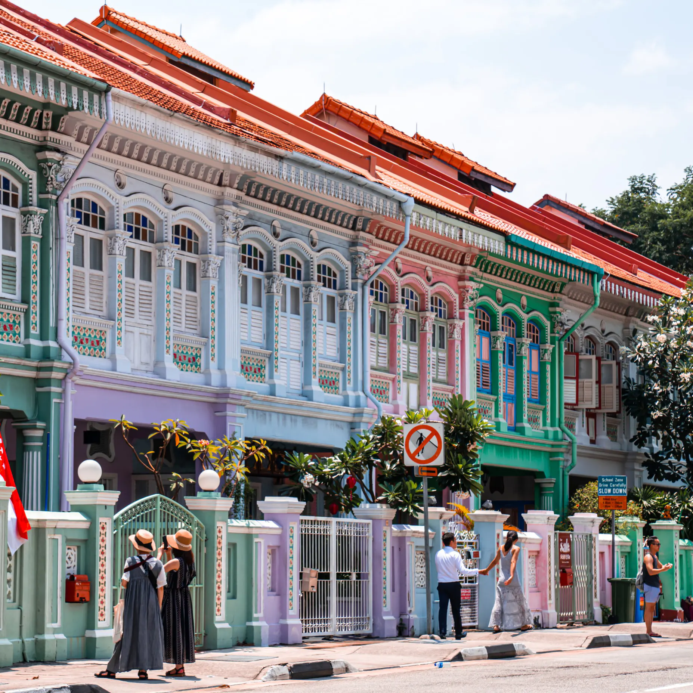

Chinatown
Temples, shophouses, street markets, and hawker food.

Explore Singapore's historic neighbourhoods through streets, food, buildings, and community traditions.
Temples, shophouses, street markets, and hawker food.
Colourful shops, temples, spices, textiles, and local food.
Sultan Mosque, Arab Street, Haji Lane, and murals.
Take a walking trail and compare how each district shows a different part of Singapore's culture.
Which heritage district is known for Sultan Mosque and Haji Lane murals?
Choose one answer.